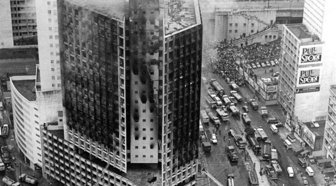
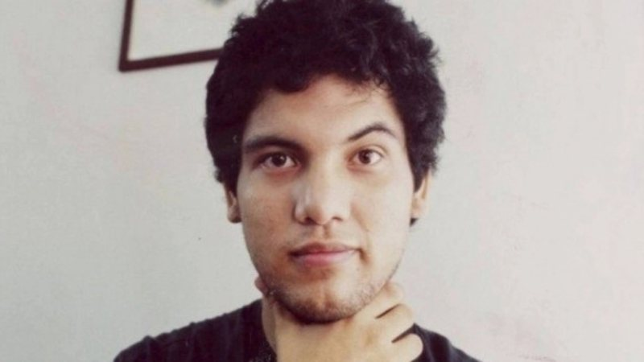
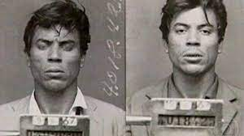
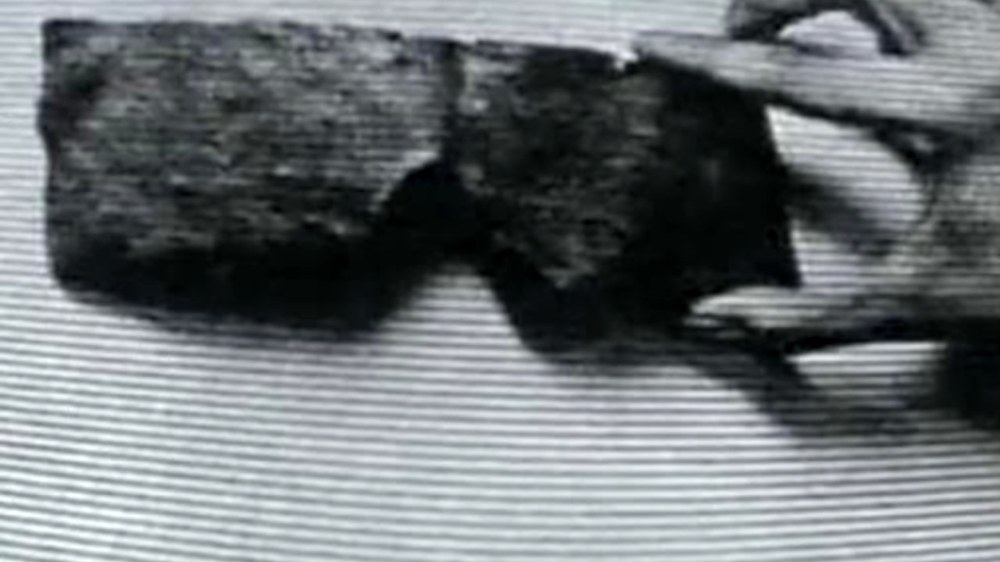
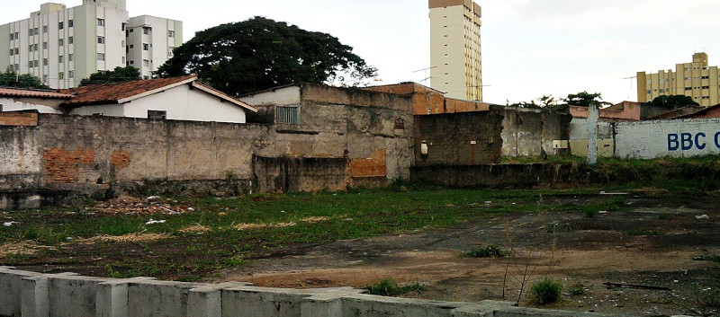

Publicado em: 29/06/2022
5 casos mais sombrios do Linha Direta
O linha direta foi um programa da rede globo, foi exibido entre 1999 até 2007, mas, muitas pessoas não sabem que existiu uma outra versão em 1990, sendo extinta no mesmo ano. O programa retratava casos de polícia até aos de mistérios, era feito uma reconstituição que contava a tragetória da trama. Eu explico com mais detalhes nesse site: Linha direta - história. Vamos a lista.
1 - Edifício Joelma
Mas nem só de crimes não resolvidos viviam o programa. Em 2005 o linha direta Mistério teve como estreia os enigmas do incêndio do Edifício Joelma. No caso foi feita a reconstituição de um crime que havia ocorrido ainda em 1948 na casa que foi demolida para a construção do Edifício Joelma. O prédio teve um terrível incêndio anos depois, em 1974. No caso, 191 pessoas morreram e 300 ficaram feridas.
No tal edifício, supostos fantasmas rondavam, além dos gritos que eram escutados. Por falar em gritos, foi reconstituído também os gritos que eram escutados no cemitério onde foram enterrados 13 corpos de vítimas não-identificadas do Edifício Joelma.
2 - O vampiro de Niterói
Em 1990, uma onda de violência tomou conta do Rio de Janeiro. Na época, um psicólogo forense percebeu que havia algo bizarro acontecendo nas ruas e começou a investigar. Ele percebeu que vários casos tinha coisas em comum, como ataques a meninos de 1 a 6 anos da idade. A forma com que as vítimas eram assassinadas era mais estranha ainda, o vampiro de Niterói bebia o sangue das vítimas pois para ele, o sangue possuía a juventude das crianças.
No total, esse serial killer matou 17 crianças. Quando foi encontrado, acharam dentro de sua mala o esqueleto de um menino. Quando perguntado o que fazia com o esqueleto, o cara disse que se masturbava com os ossos da criança e se arranhava outros ossos.
3 - O bandido da luz vermelha
João Acácio Pereira da Costa, mais conhecido como o Bandido da Luz Vermelha, foi um criminoso que aterrorizou a elite paulistana na década de 60. Ganhou o apelido por carregar uma lanterna de luz avermelhada que era usada amedrontar suas vítimas.
Durante o seu julgamento, foi descoberto que Acácio havia sido relegado pela família e desde sempre teve que aprender a se virar com métodos não muito honrosos, como roubo e furto. O criminoso foi para a capital paulista justamente arquitetando tais planos para assaltar residências da classe alta da cidade, que já não se sentia mais tão protegida devido ao boom imobiliário que mudara a zona nobre da cidade.
4 - Máscaras de chumbo
Esse caso aconteceu ainda em 1966, quando dois técnicos em eletrônica foram a Niterói com uma quantia grande de dinheiro. Chegando lá, eles foram até a loja de eletrônicos Fluscop, compraram capas de chuva e depois entraram em um bar nas proximidades do Morro do Vintém. Eles foram encontrados mortos no alto do morro um dia depois. A dupla não tinha marcas de tiros e nem facadas, mas tinham nas mãos máscaras estranhas de chumbo e um bilhete dizendo o seguinte: “16:30hs está no local determinado. 18:30hs ingerir cápsula, após efeito proteger metais. aguardar sinal máscara“. Estranho, não?
Muitas pessoas disseram que os dois técnicos morreram ao fazerem contato com extraterrestres, mas a verdade nunca foi revelada. Além disso, eu já fiz um site completo sobre o caso, confira aqui.
5 - Césio-137
Foi no dia 13 de setembro de 1987 que dois catadores de papel encontraram um aparelho abandonado em uma clínica de radioterapia na cidade de Goiânia. Dentro desse aparelho existia uma cápsula de césio-137. Esse material altamente radioativo espalhou o verdadeiro terror pela capital goiana e deixou cerca de 675 pessoas contaminadas e quatro vítimas fatais. É claro que o Linha Direta não deixaria passar esse caso.